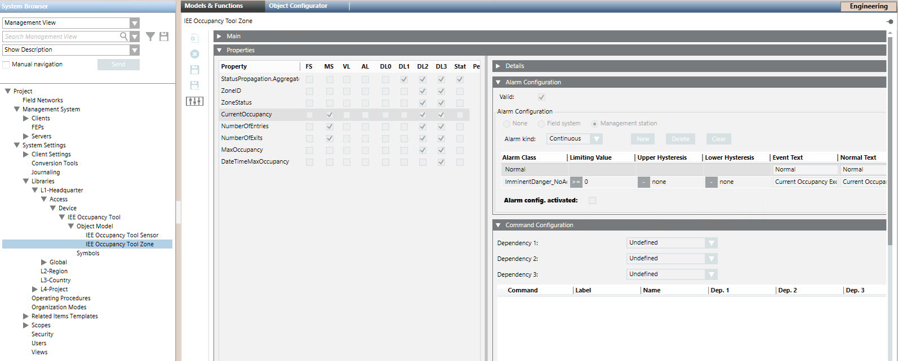

Option 1 – Enable Events for All IEE Occupancy Tool Zones
Use this method to modify an alarm configuration for all IEE Occupancy zones.
- You have the rights to access and modify the Desigo CC libraries.
- In the Headquarter IEE Occupancy Tool library, select the zone object model:
- […] > Libraries > L1-Headquarter > Access > Device > IEE Occupancy Tool > Object Model > IEE Occupancy Tool Zone
- In the Models & Functions tab, click Customize
 .
.
NOTE: If the icon is dimmed it means that the selected object model is already customized. Skip to step 4. - Click OK.
- The customized object model is added to the customized IEE Occupancy Tool library.
- Select the customized object model. For example: [...] > Libraries > L4-Project > Access > Device > IEE Occupancy Tool > Object Model > IEE Occupancy Tool Zone.
- In the Models & Functions tab, close the Main expander and open the Properties expander.
- In the list on the left, select the Property for which you want to enable the event. For example: CurrentOccupancy, NumberOfEntries, NumberOfExits.
- The Details, Alarm Configuration and other expanders on the right update to show the settings of the selected property.
- In the Alarm Configuration expander, select the Alarm config.activated check box.
- Click Save
 .
.
- The modified alarm configuration will apply to all the IEE Occupancy Tool zones that are based on this object model.
